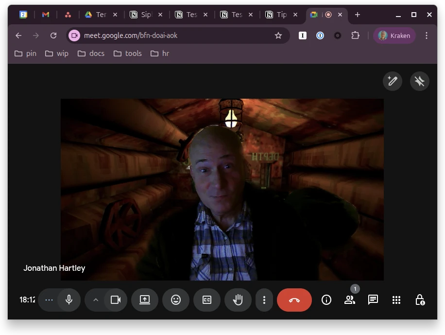

Iron Lung
Game by David Szymanski, published 2022
Movie written, directed, and starring Mark "Markiplier" Fischbach, released 2026

New work meeting background just dropped!
Invited to view the movie at Pop's with Phil and Sarah, I crammed the game it was based on from start to finish the night before, with Zander watching disdainfully over my shoulder every step of the way. I gave SCP-354, which inspired the game, a wide berth.
Both are tense and engaging, but clearly only for a particular kind of viewer. The game itself has a very narrow focus, as befits a single-person indie production. This means you'll only really enjoy it if you're dorky enough to fixate on the mechanic of cross referencing your submarine's map co-ordinates sufficiently hard to orient your way around a whole system of underwater trenches. Every step of the way you negotiate your way past unseen but deadly canyon walls by dead reckoning alone, a tense enough exercise even without the proximity alarms. On top of that, strange noises and... other interuptions... when they drop, are technically relatively tame and limited, but in context, entwined in the co-ordinate grind, they are experienced as shocking and panic inducing.
Similarly, I enjoyed the movie, but I see reviews are all over the map. Clearly some don't have patience for its limited scope - 99% of the runtime takes place with one character in a single room. But I found it taut and thrilling. Some patches of unclear dialog softened the high-concepts thrown around, but for me it was always an experience of style and vibes anyway.